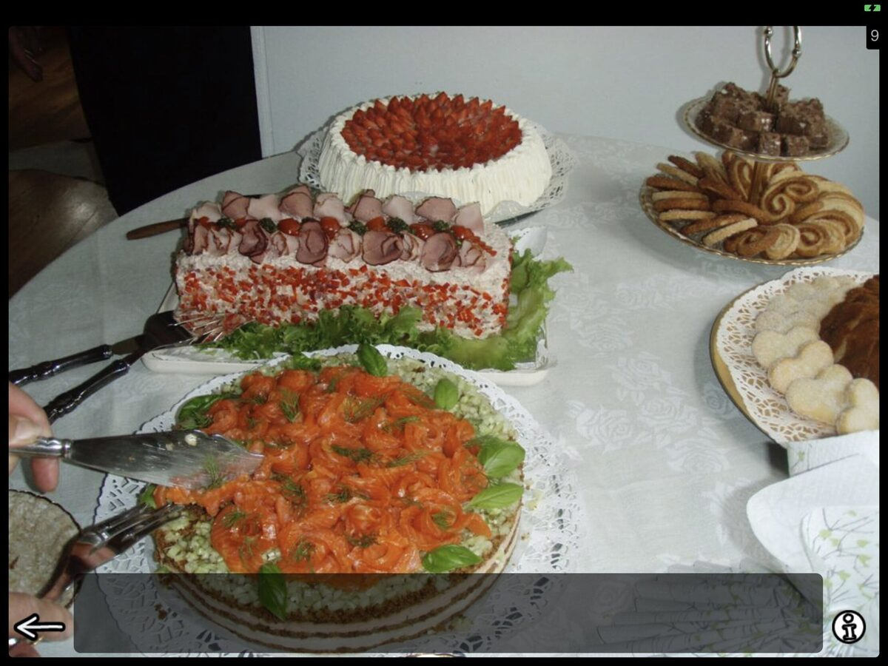
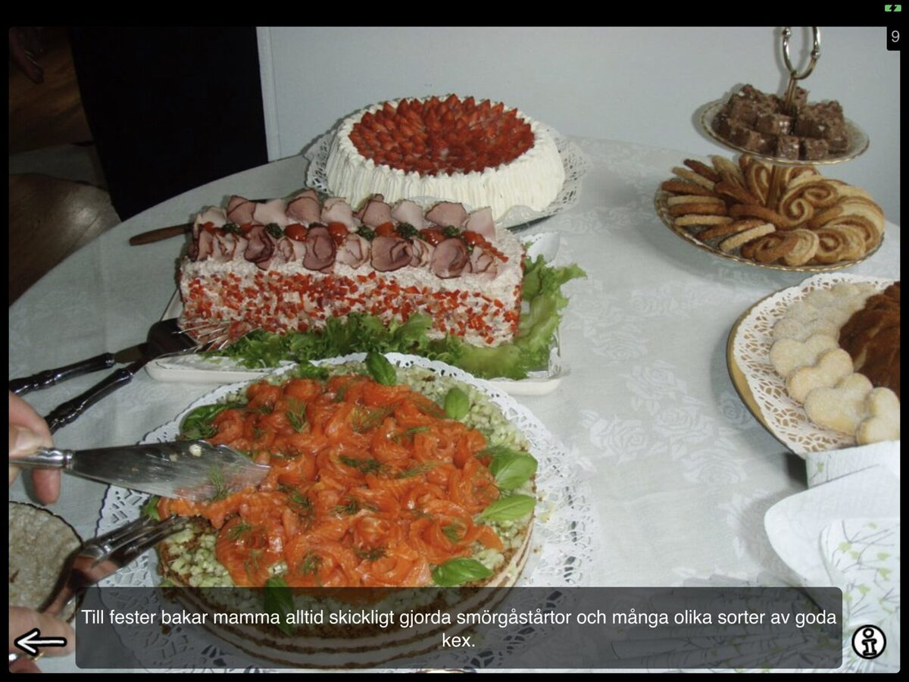
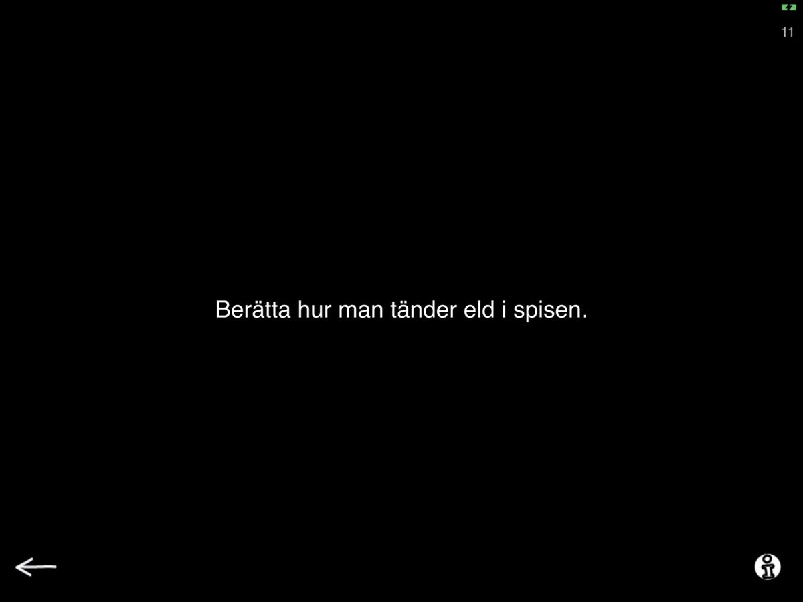
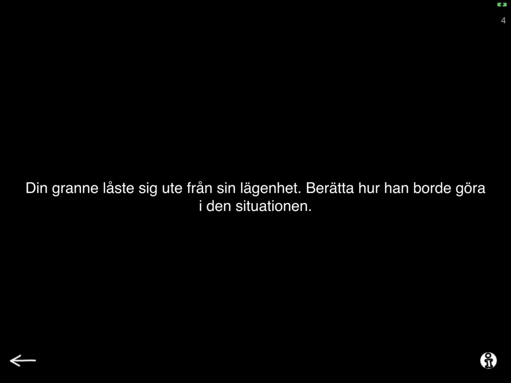
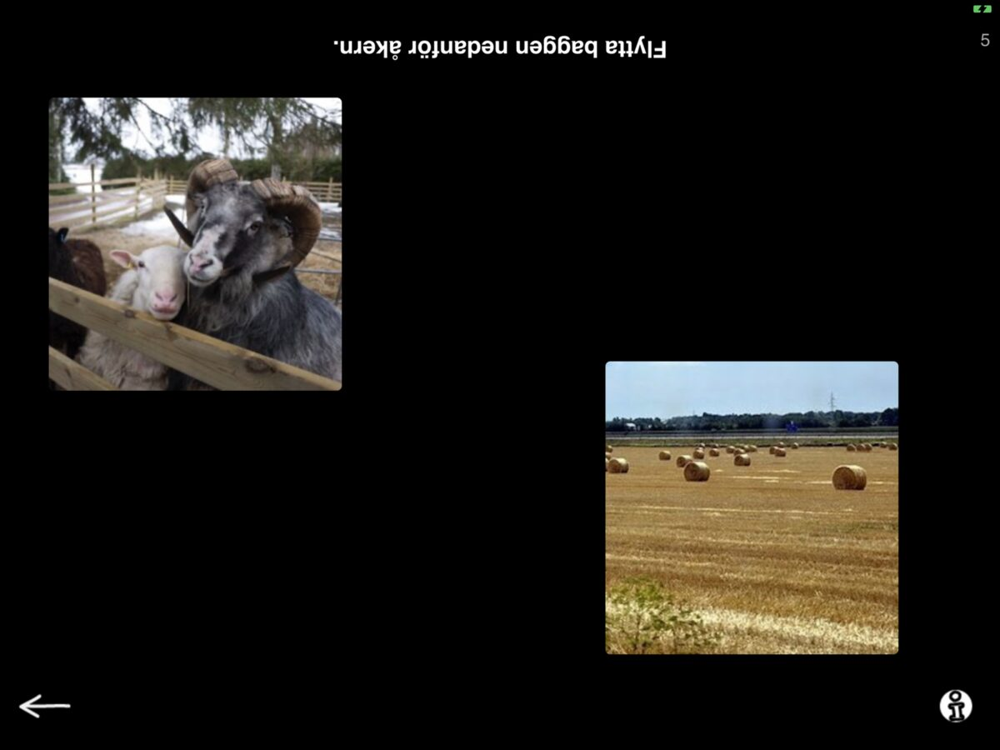
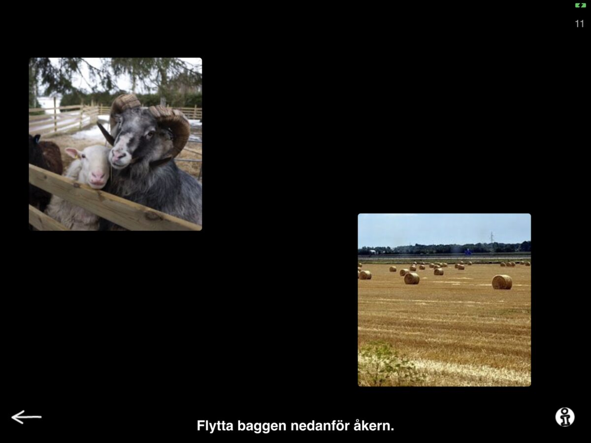
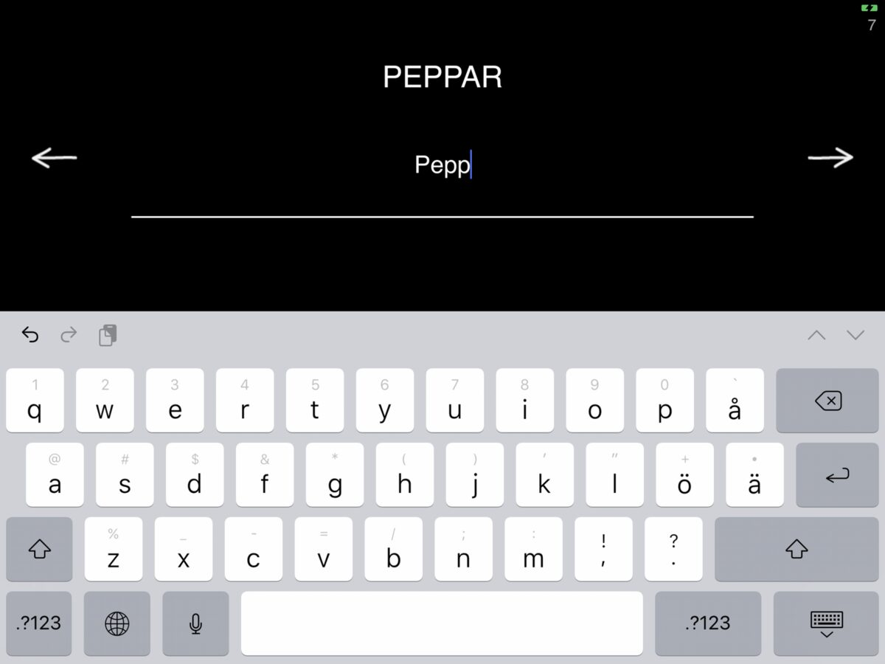
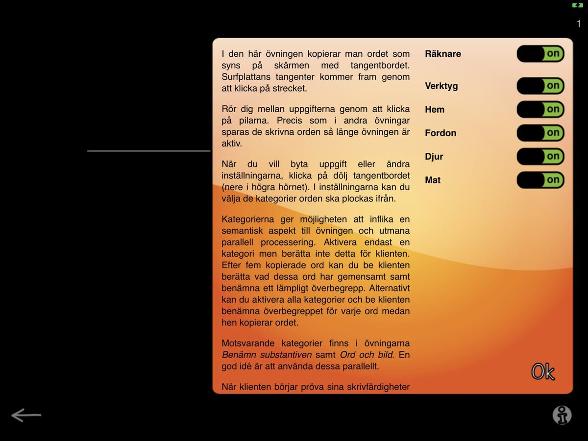
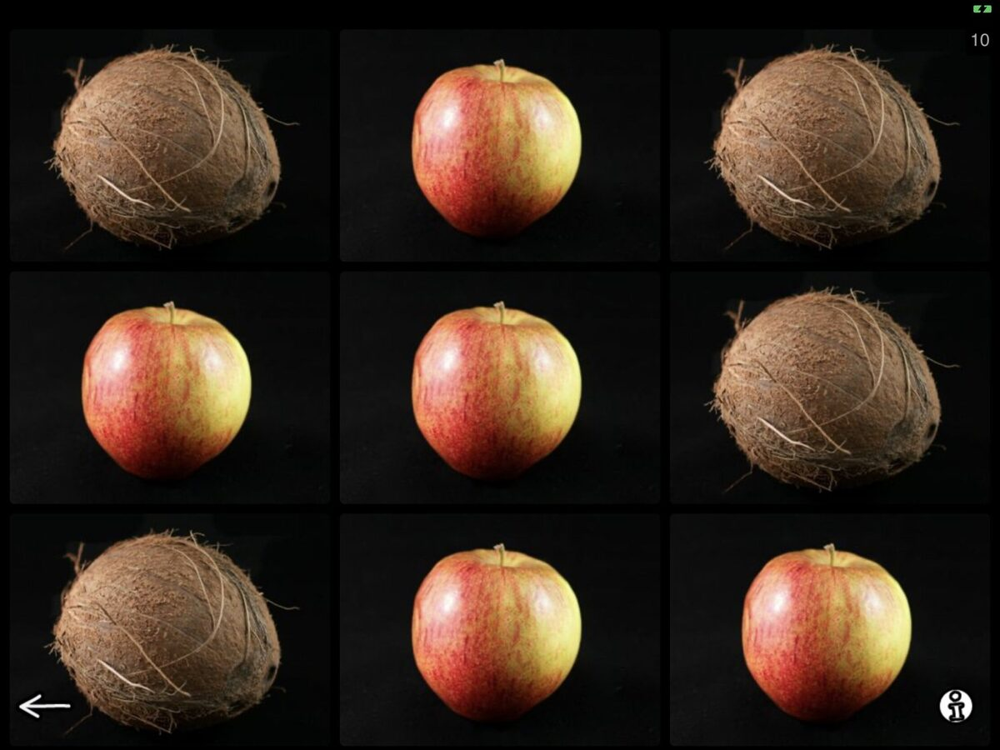

How are you doing? It sure is turning out to be a very different spring than what we were expecting. I hope you are staying healthy and things are falling into place for you and your loved ones (maybe slowly, but hopefully surely).
For us, this has been a busy few weeks. We have been setting up way more telepractice appointments than planned and helping our patients navigate this new environment for many. As such we have has a chance to use Sanapsis in teletherapy more than usual and it has been a blast! Hopefully you have also found ways to make use of the materials and ideas in Sanapsis during these times. We would love to hear how it is going! Please reach out via this site or comment below. Also, please reach out if you need assistance in figuring out a good setup for you, how to share your iPad screen etc. We are here and always happy to help.
In other news: We are exited to bring more exercises to our Swedish speaking friends! Our update for Sanapsis Svenska (1.5) is ready to download from the AppStore. This free update includes 5 new exercises to be used online or in person with your patients. There is new stuff in three categories: Speech Production, Comprehension, Writing and Perseveration.

For Speech Production we have two new exercises: Descriptive sentence / Bilda en beskrivande mening and Give Instructions / Ge Instruktioner.
Descriptive sentence is kind of like a talkative sister of our earlier exercise Precise sentence. In Precise sentence you show your patient a picture and ask them to provide a simple, straightforward informative sentence, e.g There are cakes on the table. In Descrptive sentence you also get a image prompt, but ask your patient to produce a sentence with as much detail and adjectives as possible, to truly describe the photo. There is an example sentence hidden under the panel you can use as a general guideline of what the sentence could look like. You can find more information on why and how to use this task with your patients under the info button in the right lower corner.

Bilda en beskrivande mening, screen you see when launching the exercise

Bilda en beskrivande mening, with example
Give instructions is a text based exercise for speech production. Here you are presented with a prompt to describe a sequential task. There are two levels. Level 1 has familiar tasks where your patient is asked to produce instructions on how to complete these tasks, such as Explain how to light a fire in a fireplace. Tasks on level 2 has the same idea, but with a twist. Prompts on level 2 include more complex situations and a component of problem solving, such as Your neighbor locked himself out of the house. Tell him what to do. Below you can see examples of both levels. You can find more information on why and how to use these prompts with your patients under the info button in the right lower corner.

Ge instruktioner, level 1

Ge instruktioner, Level 2
Update 1.5 for Sanapsis Svenska includes one new exercise for our Comprehension category. Follow instructions / Följ instruktionerna is a task where your patient moves the images on the screen following prompts you give them. This task is best used when facing each other at a table where you can read the upside down text on the top of the screen and the patient can manipulate the images. In settings you can switch it up to a reading task. This will switch the text to the bottom of the screen and the patient can follow the prompt while reading. You can also find this exercise in our Reading category in our next update.

Följ instruktionerna as a comprehension task when seated on opposite sides of a table

Följ instruktionerna for a reading task
In Writing-category we are moving to the keyboard! This update adds a word level copying task, Copy words using the keyboard / Kopiera ordet med tangentbordet. On screen you see a word. Tapping the line pops up a keyboard on screen so you can copy away! If you prefer a bigger keyboard, you can connect a bluetooth keyboard to your iPad and use that. In settings you can see the familiar categories from where the words to be copied are drawn from. Mix and match to meet your patients needs. Ideas on how to make use of these categories can be found under the info button.

Kopiera ordet med tangentbordet.

Kopiera ordet med tangentbordet, settings for instructions and categories.
In our Perseveration category you are already familiar with tasks using letters and numbers. Now we are introducing a new member to that group, Repetitive naming, pictures / Seriell benämning, bilder. Here you will see images and ask your patient to name them serially while working on strategies to reduce the tendency to persevere. Look for more in depth description on how and when to use these exercises under the info button! And while you are at it, you will discover that some of the familiar categories are presented here too, along with options on how many images per screen and how many objects represented in those images. In this example I have chosen to have only category (Fruit and Vegetable) active and I have 9 images per screen with 2 objects, orange and coconut. I have tapped some of them to reveal the written name, easy to hide by tapping again.

Seriell benämning, bilder
Seriell benämning, bilder, with examples
That is our update 1.5 for Sanapsis Svenska! Hope you enjoy it! Remember, updating Sanapsis is and always will be free. Hope to hear from you soon. Remember we are happy to answer any questions you might have. Stay well.